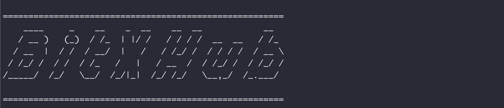

中继链部署
中继链用于应用链的跨链管理，以及跨链交易的可信验证与可靠路由，是一种实现IBTP协议的开放许可链。部署中继链节点主要是三个步骤：安装包获取（准备）、配置文件修改和程序启动，下面依次进行说明。
安装包获取
源码编译
您可以自行拉取BitXHub项目的源码，然后在本地编译BitXHub及插件的二进制文件，具体操作步骤可参考如下：
# 1. 首先拉取bitxhub项目源代码
git clone https://github.com/meshplus/bitxhub.git
# 2. 进入bitxhub目录，切换到指定的分支或版本后编译bitxhub二进制
cd bitxhub && git checkout v1.6.2 && make build
# 注意⚠️：首次编译需要在build之前先执行 make prepare 完成依赖安装
# 编译完成后可以在项目的bin目录下看到刚刚生成的bitxhub二进制文件，可以确认下bitxhub版本是v1.6.2
./bin/bitxhub version
# 3. 接下来需要编译共识插件，进入到 internal/plugins 目录进行编译
cd internal/plugins && make plugins
# 编译完成后可以在项目的internal/plugins/build目录下看到刚刚生成的共识插件文件，raft.so和solo.so
提示：在bitxhub v1.7.0及以上的版本，我们也提供了一键生成部署所需的文件包的make命令：make release-binary，执行完成后可以在项目的dist目录看到符合您系统的压缩包，解压即可使用。
经过以上的步骤，相信您已经编译出了部署中继链节点所需的二进制文件，中继链节点运行还需要外部依赖库，均在项目build目录下（Macos使用libwasmer.dylib，Linux使用libwasmer.so）,建议将得到的二进制和适配的依赖库文件拷贝到同一目录，方便之后的操作。
二进制直接下载
除了源码编译外，我们也提供了直接下载BitXHub二进制的方式，下载地址链接如下：BitXHub二进制包下载，链接中已经包含了所需的二进制和依赖库，您只需跟据实际情况选择合适的版本和系统下载即可，建议使用最新的BitXHub发布版本。
快速启动BitXHub节点
获取到安装包后，接下来要根据您的实际情况修改配置文件。
-
如果您是在本地编译的二进制包，您也可以在项目根目录执行
make cluster一键启动四节点raft共识的BitXHub集群，或者执行make solo一键启动单节点solo共识的BitXHub节点。 -
如果您是直接下载的二进制安装包，为了简化操作，我们也提供了可以直接启动raft/solo共识的节点配置文件示例，其下载地址与二进制包一样，文件名以example开头。需要注意的是，raft共识的示例配置文件是四节点集群，solo共识的示例配置文件是单节点
接下来只需将上一步下载的BitXHub二进制及对应插件拷贝到配置目录即可，具体操作如下：
# 1. 解压二进制压缩包
mkdir bitxhub && cd bitxhub
cp ~/Downloads/bitxhub_v1.6.2_Darwin_x86_64.tar.gz .
tar -zxvf bitxhub_v1.6.2_Darwin_x86_64.tar.gz
# 2. 解压配置文件压缩包(以raft共识为例)
mkdir raft-nodes
tar -zxvf example_bitxhub_v1.6.2.tar.gz -C raft-nodes/
# 3. 将bitxhub、共识插件二进制和依赖库文件分别拷贝到4个节点的配置目录（以node1为例）
cp bitxhub raft-nodes/node1/
cp libwasmer.dylib raft-nodes/node1/
cp raft.so raft-nodes/node1/plugins/
# 注意⚠️：节点2、3、4也需要执行上面拷贝操作，对于Linux系统依赖库文件是libwasmer.so
# 以上操作均是示例，执行时二进制和配置文件压缩包的名称可能存在差异，需要根据实际情况进行调整
拷贝完成后，可以进入各个节点的配置目录，依次启动BitXHub节点即可，启动操作如下：
cd bitxhub/raft-nodes/node1
export LD_LIBRARY_PATH=$LD_LIBRARY_PATH:$(pwd)
./bitxhub --repo ./ start
...
...
cd bitxhub/raft-nodes/node4
export LD_LIBRARY_PATH=$LD_LIBRARY_PATH:$(pwd)
./bitxhub --repo ./ start
待节点集群打印出bitxhub的LOGO，表示BitXHub集群开始正常工作

BitXHub配置文件说明
前面的提供的配置示例可以方便地快速启动BitXHub节点(集群)，但是没有对配置文件进行具体说明，考虑到您可能需要详细了解bitxhub的运行原理和配置项的具体含义，从而可以灵活配置和启动节点，我们接下来对BitXHub的具体配置项进行说明。
中继链节点主要包括bitxhub.toml、network.tom和order.toml配置文件，分别代表节点本身、节点网络以及节点共识方面的配置，其中order.toml一般使用默认配置即可，其它两个文件均需要根据实际部署情况进行修改，接下来的内容依然以node1为例。
bitxhub.toml文件配置修改
bitxhub.toml文件是BitXHub节点启动的主要配置文件。各配置项说明如下：
| 配置项 | 说明 |
|---|---|
| solo | 是否按照单节点模式启动BitXHub |
| [port] | gateway、grpc、pprof和monitor服务端口 |
| [pprof] | 性能剖析配置 |
| [monitor] | 监控服务配置 |
| [gateway] | 跨域配置 |
| [ping] | ping集群节点功能 |
| [security] | 证书体系 |
| [limiter] | 流量控制配置 |
| [log] | 日志输出相关设置 |
| [cert] | 是否开启认证节点p2p通信证书 |
| [order] | 共识模块，作为插件进行加载 |
| [executor] | 执行引擎类型 |
| [genesis] | 创世节点配置 |
在快速体验部署流程中，需要修改的配置一般只有port、order的信息，其它配置默认即可。 以下为示例参考
- 根据您机器实际分配的端口进行变更：
[port]
gateway = 9091
grpc = 60011
pprof = 53121
monitor = 40011
- 共识算法类型选择（开源版本目前支持raft和solo）：
[order]
plugin = "plugins/raft.so"
network.toml文件配置修改
network.toml文件是BitXHub节点网络配置文件，各配置项说明如下：
| 配置项 | 说明 |
|---|---|
| N | 集群节点数量 |
| id | 当前节点标识 |
| new | 判断当前节点是新加入的节点 |
| [nodes] | 集群节点信息 |
| account | 节点验证者地址 |
| hosts | 节点网络地址 |
| id | 节点标识 |
| pid | p2p网络唯一标识 |
在实际部署过程中，需要修改的配置一般是节点数量、nodes的信息，其它配置默认即可。 以下为示例参考
- 配置当前节点集群的数量以及自身的id:
id = 1 # self id
n = 4 # the number of vp nodes
new = false # track whether the node is a new node
- 配置集群中各个节点的信息
[[nodes]]
account = "0xc7F999b83Af6DF9e67d0a37Ee7e900bF38b3D013"
hosts = ["/ip4/127.0.0.1/tcp/4001/p2p/"]
id = 1
pid = "QmXi58fp9ZczF3Z5iz1yXAez3Hy5NYo1R8STHWKEM9XnTL"
说明：上面 account就是上一节中bitxhub节点的address地址，hosts中一般就改变ip地址即可，节点的pid信息可以通过如下命令获取：
./bitxhub cert priv pid --path ./node1/key.priv
# 示例输出：QmWAaFDQ3p2Hj383WsBGU2nLMtsJk1aT9obXXXxL5UyUuA
order.toml文件配置修改
order.toml文件是bitxhub共识配置文件。各配置项说明如下：
| 配置项 | 说明 |
|---|---|
| [raft] | raft 相关配置 |
| [rbft] | rbft 相关配置 |
| [solo] | solo相关配置 |
配置示例如下（无特殊情况不要修改此配置）：
[raft]
batch_timeout = "0.3s" # Block packaging time period.
tick_timeout = "0.1s" # TickTimeout is the internal logical clock for the Node by a single tick, Election timeouts and heartbeat timeouts are in units of ticks.
election_tick = 10 # ElectionTick is the number of Node.Tick invocations that must pass between elections.
heartbeat_tick = 1 # HeartbeatTick is the number of Node.Tick invocations that must pass between heartbeats.
max_size_per_msg = 1048576 # 1024*1024, MaxSizePerMsg limits the max size of each append message.
max_inflight_msgs = 500 # MaxInflightMsgs limits the max number of in-flight append messages during optimistic replication phase.
check_quorum = true # Leader steps down when quorum is not active for an electionTimeout.
pre_vote = true # PreVote prevents reconnected node from disturbing network.
disable_proposal_forwarding = true # This prevents blocks from being accidentally proposed by followers.
[raft.mempool]
batch_size = 200 # How many transactions should the primary pack.
pool_size = 50000 # How many transactions could the txPool stores in total.
tx_slice_size = 10 # How many transactions should the node broadcast at once
tx_slice_timeout = "0.1s" # Node broadcasts transactions if there are cached transactions, although set_size isn't reached yet
[raft.syncer]
sync_blocks = 1 # How many blocks should the behind node fetch at once
snapshot_count = 1000 # How many apply index(blocks) should the node trigger at once
[rbft] #RBFT configurations
set_size = 25 # How many transactions should the node broadcast at once
batch_size = 500 # How many transactions should the primary pack before sending pre-prepare
pool_size = 50000 # How many transactions could the txPool stores in total
vc_period = 0 # After how many checkpoint periods( Blocks = 10 * vcperiod ) the primary gets cycled automatically. ( Set 0 to disable )
check_interval = "3m" # interval of the check loop
tolerance_time = "5m" # The max tolerance time duration (in seconds) of out-of-date
batch_mem_limit = false # Indicates whether limit batch mem size or not
batch_max_mem = 10000 # The max memory size of one batch
[rbft.timeout]
sync_state = "3s" # How long to wait quorum sync state response
sync_interval = "1m" # How long to restart sync state process
recovery = "15s" # How long to wait before recovery finished(This is for release1.2)
first_request = "30s" # How long to wait before first request should come
batch = "0.5s"# Primary send a pre-prepare if there are pending requests, although batchsize isn't reached yet,
request = "6s" # How long may a request(transaction batch) take between reception and execution, must be greater than the batch timeout
null_request = "9s" # Primary send it to inform aliveness, must be greater than request timeout
viewchange = "8s" # How long may a view change take
resend_viewchange = "10s" # How long to wait for a view change quorum before resending (the same) view change
clean_viewchange = "60s" # How long to clean out-of-data view change message
update = "4s" # How long may a update-n take
set = "0.1s" # Node broadcasts transactions if there are cached transactions, although set_size isn't reached yet
[rbft.syncer]
sync_blocks = 1 # How many blocks should the behind node fetch at once
[solo]
batch_timeout = "0.3s" # Block packaging time period.
[solo.mempool]
batch_size = 200 # How many transactions should the primary pack.
pool_size = 50000 # How many transactions could the txPool stores in total.
tx_slice_size = 10 # How many transactions should the node broadcast at once
tx_slice_timeout = "0.1s" # Node broadcasts transactions if there are cached transactions, although set_size isn't reached yet